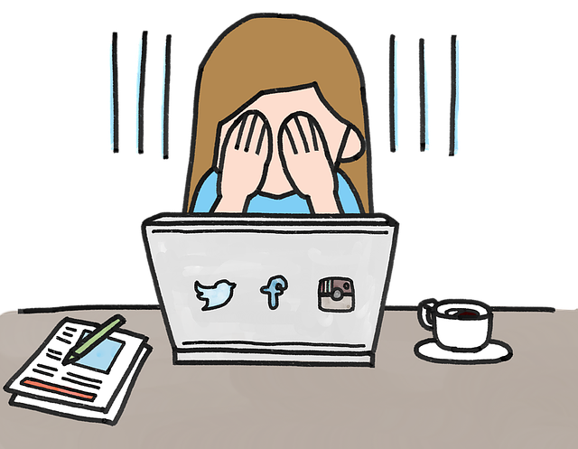

Ventajas y Desventajas de las Redes Sociales
Ventajas:
- Facilitan la comunicación y conexión con otras personas
- Permiten compartir información y contenido de forma rápida y sencilla
- Pueden ser utilizadas con fines educativos y profesionales
Desventajas:
- Pueden causar adicción y afectar la salud mental
- Riesgo de privacidad y seguridad de los datos personales
- Pueden promover el cyberbullying y la difusión de información falsa
Para obtener más información sobre este tema, puedes explorar los siguientes recursos:

Volver a la página principal
Ir a la página 1